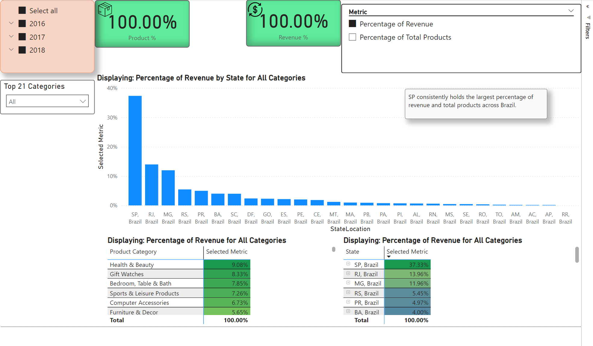
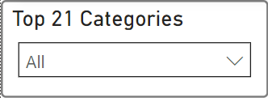
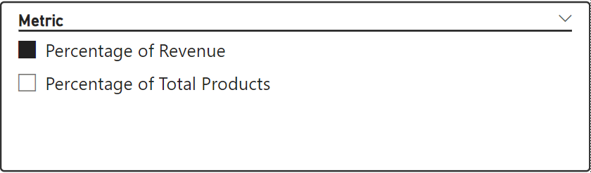
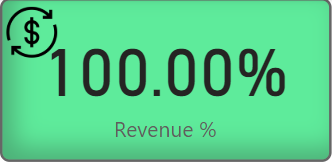
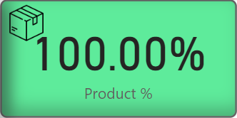
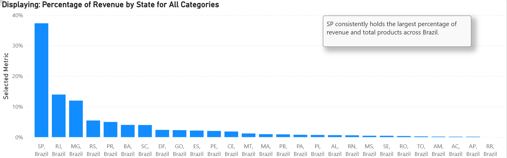
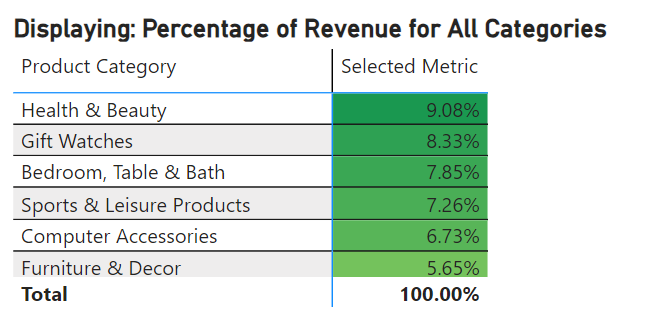

Dashboard 2: State and Product Performance Analysis

Purpose
This dashboard provides a comprehensive analysis of state and product performance
across selected metrics and filters. It enables users to uncover key trends
by dynamically filtering data and visualizing insights for revenue and product counts.
Key Insights
General Observations
-
Observation 1: São Paulo consistently leads in both revenue (37.33%) and product count (41.98%).
-
Observation 2: Rio de Janeiro consistently generates the second-highest revenue across most categories,
with the exception of
Health & Beauty, where Minas Gerais ranks second.
Drillthrough Details
-
Category-specific insights: Filtering by state allows users to explore product category performance for specific regions.
Dashboard Features and Sections
Filters and Selections
Purpose: Enables users to dynamically filter the data by year, product categories, and selected metrics.
Features:
-
Time Slicer: Allows filtering by year, quarter, and month.
-
Product Category Slicer: Enables users to select specific categories. Titles of the visualizations and data dynamically update based on the selection.
-
Selected Metric Slicer:
-
This slicer allows users to toggle between metrics (Percentage of Revenue or Percentage of Products). It updates all three visualizations dynamically to reflect the selected metric.
-
To learn more about the
Selected Metric measure, click here.
Screenshots

Product Category Slicer

Selected Metric Slicer
Key Performance Indicators
Purpose: Provides insights into the percentage metrics for revenue and product count based on applied filters.
Functionality:
-
Revenue %: Displays the percentage contribution of the selected dataset to the total revenue.
-
Product %: Displays the percentage of products within the selected dataset relative to the entire dataset.
Key Insights:
-
In its unfiltered state, the KPI cards provide overall metrics for the dataset.
-
Filters enable granular analysis, highlighting relative contributions of specific selections.
Screenshots

Revenue Percentage KPI Card

Product Count Percentage KPI Card
Visualizations
1. State Performance Bar Chart
Purpose: Displays the performance of each state based on the selected metric and product category.
Key Insight: São Paulo leads in both revenue (37.33%) and product count (41.98%).
Features:
- Dynamically updates based on metric toggles and product category selections.
- Includes a callout highlighting the top-performing state.
Screenshots

State Performance Bar Chart
2. Product Category Performance Heatmap
Purpose: Provides a tabular view of product category performance across the selected metric and state filters.
Features:
- Updates dynamically based on selected metrics, categories, and state filters.
- Highlights top-performing product categories for selected states.
Screenshots

Product Category Performance Heatmap
3. State Performance Heatmap
Purpose: Displays state performance in a tabular format, offering an alternative view to the bar chart.
Features:
- Dynamically updates based on selected metrics.
- State columns are clickable, enabling interactive filtering.
Screenshots

State Performance Heatmap
Insights in Action
-
State Performance Optimization: Focus resources on high-performing states like São Paulo to maximize revenue potential.
-
Product Strategy: Leverage category insights to refine inventory and marketing strategies for top-performing states.
-
Metric Comparisons: Use metric toggles to identify discrepancies between revenue and product contributions.
Measures Used
This section provides an overview of the key measures used in this dashboard. For a look at all measures used across my analysis, refer to the DAX Measures Document. Otherwise, use the links below to navigate to the respective measure.
-
Percentage of Revenue: The percentage of total revenue generated by the current selection.
Learn more.
-
Percentage of Total Products: The percentage of total products within the current selection.
Learn more.